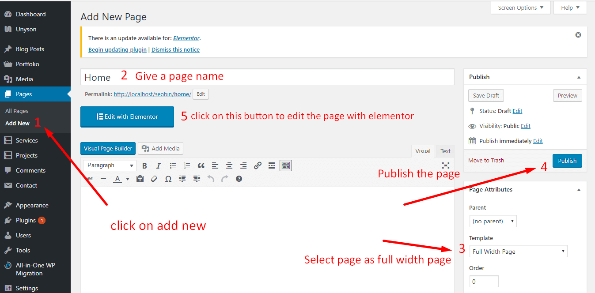
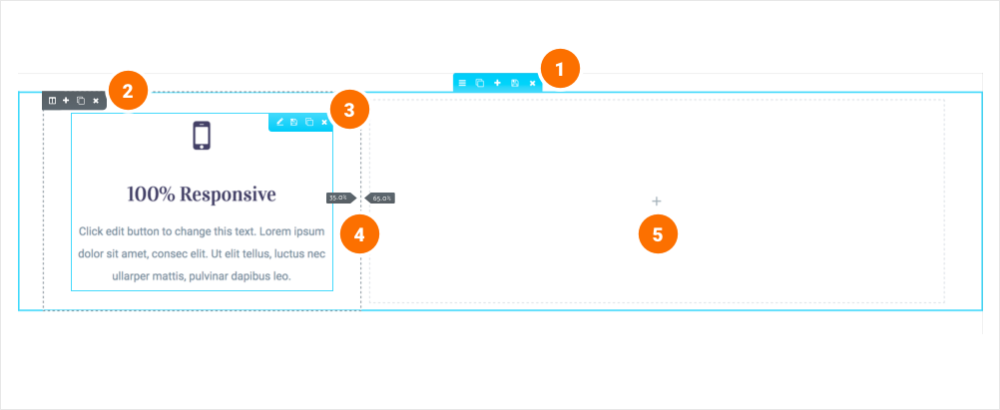

General information
Autrics Version: 2.1Created: February, 2019
Created by: Tripples
Thank you for purchasing our theme. If you have any questions that are beyond the scope of this help file, please feel free to open support ticket in our support forum . Thanks so much!
Introduction and quick start guide.
Thank you so much for purchasing our theme called Autrics - WordPress Theme. Please feel free to contact us if you have questions or problems about this theme. No guarantee is provided, but we will do our best to provide you with the best possible assistance.
First Step
- Documentation - That's where you
- License - Some info's about theme licencing terms
- Dummy Content - Placeholder content for testing the theme
- SampleData - Import Data to get the exact Site as the Preview Page
- Upload - This is where all Theme files are (zipped & unzipped format)
What are Parent and Child Themes?
A WordPress child theme takes the functionality of another theme, named parent theme. It gives you the possibility to customize an existing theme. Instead of modifying the theme files directly, you can activate the child theme and work within it.
All customizations are stored in the child theme and anything in the child takes priority over the parent. So if the same file exist in both child and parent, the file from the child will control that aspect of the theme.
Working with child themes, your customizations are safeguarded from future upgrades because you only upgrade the parent theme, which you never edit, while the customizations are protected in your child theme which you don’t upgrade.
Why use a Child theme?
Safe Updates. You can easily modify your website using child themes without ever changing the parent theme. When a new version of the parent theme appears, you can safely update it as all your modifications are saved in the child theme.
Easy to Extend. A child theme has a great flexibility. It does not require writing a lot of code. You can modify only those template files and functions that you need.
Install Theme
The first option how to install this Theme would be to directly upload the basquito.zip file via WordPress Theme Uploader.- Minimal requirements:
- PHP 5.6+
- Php.ini settings:
upload_max_filesize = 32M
post_max_size = 48M
memory_limit = 256M
max_execution_time = 600
max_input_time = 400 - MySQL 5.0+
- Wordpress 3.8+
- Please make sure you have proper version of wordpress installed.
- Log Into WordPress and go to Appearance > Themes
- Find the Autrics Theme and click activate
- FTP Upload:
- Unzip the "Autrics.zip" file from theme folder
- Open up your FTP manager and connect to your hosting
- Browse to wp-content/themes
- Upload the Autrics in theme folder
- Log Into WordPress and go to Appearance > Themes
- Find the Autrics Theme and click activate
- Wordpress Dashboard:
- Log into your WordPress backend
- Navigate to Appearance > Themes
- Click Install Themes
- Click Upload
- Now you just need to find the "Autrics.zip" in the Upload folder and hit Install now.
- After complete installation click on active button to active The theme.
If you are experiencing any issues during the installation I would recommend to check out this
Install Required Plugins
After activating the Autrics theme you will see the below window. and install all required plugins.
Step 1:
Setp 2: Click on Tools > Demo content install > Install
!!! Don't install Oneclick Demo content if you have an existing Site, Use Manual Demo Data XML Import.
It will take some times to install demo data
You are done ! :)
Install with Normal process
Make sure you have upload your theme via appearance-> themes or via ftp. and Active the theme
If you are experiencing any issues during the installation I would recommend to check out this
Installation Screencast
- ACTIVATE THEME
- .. That's it ! :) ...
Theme Customizer
Navigation Setting
You can find the all Theme Option from Appearance -> Customize -> Theme Settings
From Header Settings, you can change header style, add/update your site logo, change menu styles, header top contact info and social shares, show/hide search and cart button, enable sticky header, and Burgar menu etc.
- 1. Select one of them style and then
- 2. Click on Publish
Header logo
To change the header logo, go to Appearance > Customize >Theme Settings > General Settings and scroll down a little bit
Theme Settings
From Appearance -> Customize -> Theme settings -> Style Settings, you can change font family, color, font size and also heading fonts etc.

Sticky Header
From Appearance -> Customize -> Theme Settings -> Header Settings and Enable Sticky Header Show option.
Also make sure you are using White Logo for Sticky Header from Appearance-> Customize-> Theme settings -> General Settings
Button Shape
From Appearance -> Customize -> Theme Settings -> Style Settings. Just make it Enable.
Banner Settings
For editing Page banner, Blog page banner, Shop page banner and Service page banner area, change them from Appearance -> Customize -> Theme Settings -> Banner Settings
Blog Settings
For editing blog page sidebar, title, breadcrumb, and other blog options, change them from Appearance -> Customize -> Theme Settings -> Blog Settings
Footer Settings
For changing footer style, background and copyright text, enabling the back to top button, change them from Appearance -> Customize -> Theme Settings -> Footer Settings
WooCommerce Settings
For WooCommerce pages option, change settings from Appearance -> Customize -> WooCommerce
Visual Page Builder
Accessing the editor
To start working with Elementor, go to the WordPress dashboard. Then, add a new page by clicking on Pages > Add New. Then, create a new page and save it with the 'full width' template and then click on the 'Edit with Elementor' button.
Elementor UI: Getting to know the interface
The Elementor page builder includes these main areas:
1.
Panel (Top): Use the search field to find a widget.
2.
Widgets / Widget Settings: Choose a widget and configure it.
3.
Preview Button: Enables you to preview the page. Once clicked it hides/shows the panel.
4.
Panel (Bottom): View page, Go back to Dashboard or Save page.
5.
Content Area: Drag & drop widgets and design your page.
6.
Add New Section / Add Template: Choose between creating a new section or inserting an existing template.

Creating your section
A section is the most basic element that you can work with. It's the building block of every page. A section can be set as full width and spread all over the screen, or receive the content area width (by default).
After you create a section you can drag and drop a widget inside. You can also divide each section to few columns. Every page you create can contain as many sections as you want. You can drag a section above or under another one to relocate it.
- Add New Section: Click this button to create a new section or simply drag a widget from the panel and drop it in the content area.
- Select Yout Structure: Choose a structure for your section (Later, you can edit the exact width of every column). You can edit, duplicate or delete a section. You can also save it as a template or add a new section above.
- https://www.freepik.com/free-photo/modern-automobile-mechanic-composition_3363080.htm
- https://www.pngguru.com/free-transparent-background-png-clipart-dldqa
- https://www.freepik.com/premium-photo/hands-car-mechanic-with-wrench-garage_6473759.htm
- https://www.freepik.com/free-photo/modern-automobile-mechanic-composition_3363061.htm
- https://favpng.com/png_view/car-car-stock-photography-tire-automobile-repair-shop-auto-mechanic-png/m5JTUmsp
- https://www.freepik.com/free-photo/auto-mechanic-checking-car_4410481.htm
- https://elements.envato.com/es-419/diagnostico-ordenador-del-automovil-en-servicio-583XYUH
Adding columns to sections
Every section includes one or more columns. You are able to insert your content into each column. You can easily arrange and order the columns, simply by dragging and dropping them.
You can edit, duplicate, add or delete a column. You can also drag & drop it anywhere on your page. Resize Column: Drag right & left to change the width of your columns.
Inserting a widget
Click the content to edit, duplicate or delete a widget. You can also save it as a Global Widget. Add Widget: Drag a widget from the left panel and drop it into a column.
1. To edit a widget, click the pencil icon.
2. On the Panel header, you can choose to edit the widget's content and style.
3. Every widget has a different setting.
4. You can save your current changes at any stage.
5. When you have finished designing, click the 'X' button at the bottom panel and view the page.

Autrics Shortcodes
Add an Elementor section
Autrics Slider
You can add slider from this widget
Services
Take a section and add the folloing widget on that section

Working Process
Take a column and add the folloing widget on that column
Testimonials
Take a column and add the folloing widget on that column
Pricing Table
Take a column and add the folloing widget on that column
Logo carousel
Take a column and add the folloing widget on that column
Autrics Team
Take a 4 columns section and add the folloing widget on a single column to show team member.
Google Map
Take a column in a section and add the folloing widget on a column to show Google map.
Contact From Shortcode
Take a column in a section and add the folloing widget on a column to show Google map.
Slug Change
First install Child Theme from Theme bundle. Open functions.php file with WordPress Editor or AceIDE and Change service url slug file on autrics-child\functions.php folder and write the below code
//For service slug
add_filter( 'register_post_type_args', 'autrics_service_slug_register_post_type_args', 10, 2 );
function autrics_service_slug_register_post_type_args( $args, $post_type ) {
if ( 'ts_service' === $post_type ) {
$args['rewrite']['slug'] = 'service'; //rename solutions
}
return $args;
}
Image Source
Image used
icons Used:
Personal images used in demo, and for demo content themeforest assets library.
Version History (Changelog) #back to top
You can check changelog on template sales page on Themeforest
Once again, thank you so much for purchasing this theme. As I said at the beginning, I'd be glad to help you if you have any questions relating to this theme. No guarantees, but I'll do my best to assist.
Changelog
Current Theme Version 1.0 (see Change log at the bottom of Themeforest Item Description Page)
Once again, thank you so much for purchasing our theme. As we said at the beginning, we are glad to help you if you have any questions relating to this theme. Just contact us via email at themewinter@gmail.com. And please do not forget to rate this theme! :)
Themewinter